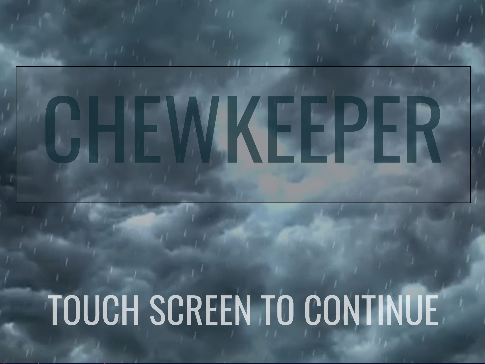
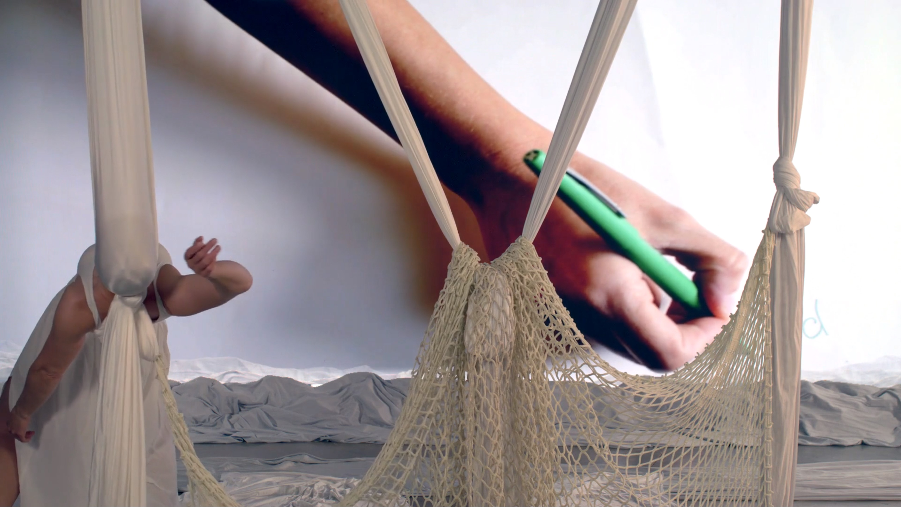
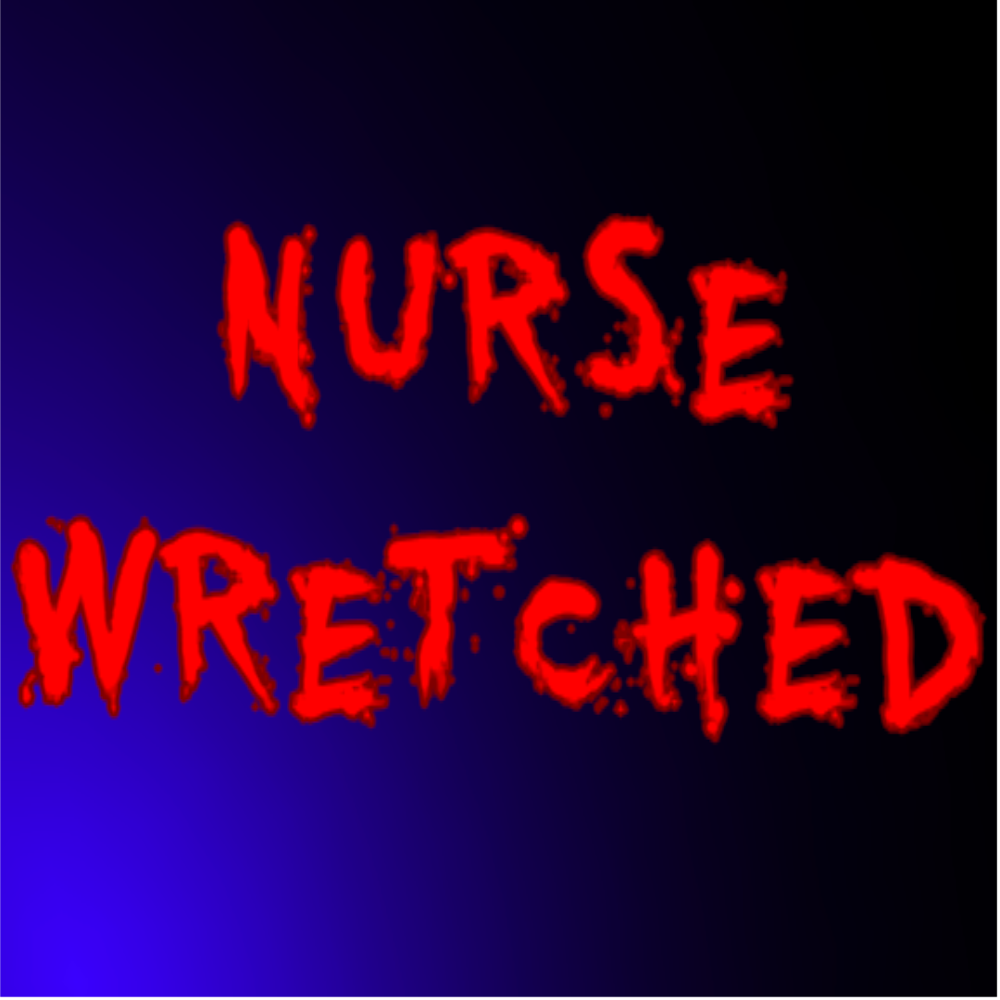
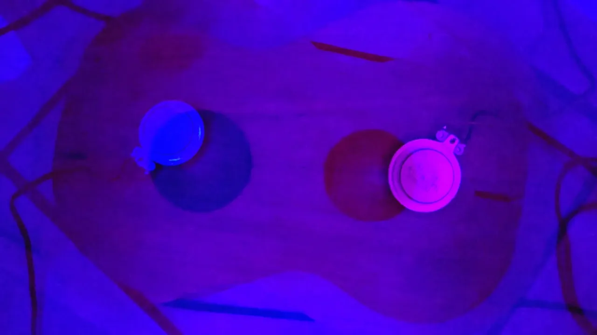
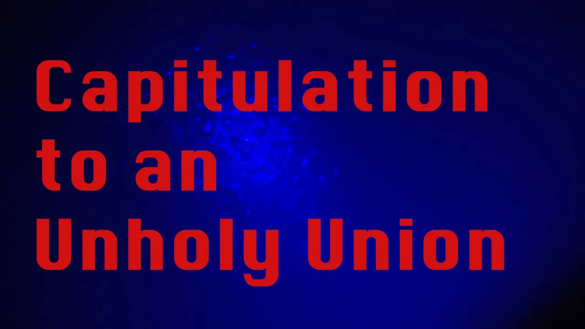
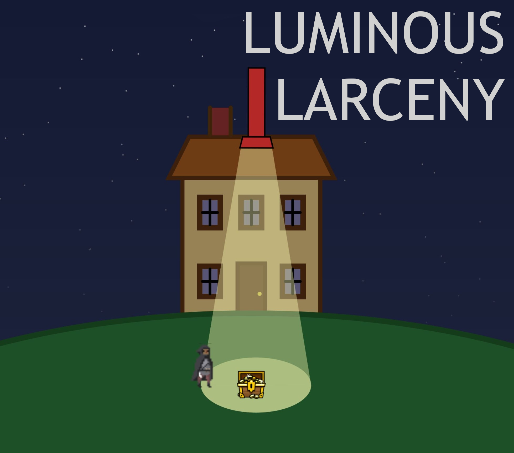

Scott Nelson is an Intermedia
Composer and Educator whose current research is centered on
investigating the suitability of immersive audio technology
for eliciting Autonomous Sensory Meridian Response (ASMR).
The immersive audio technologies being primarily investigated are
wave-field synthesis, spatial audio in virtual
reality, and mobile device networks.
Scott aims to
create immersive, multidimensional
experiences that invite participants to play an active
role in the creation of the art.
LINK TO FULL CV
EDUCATION
Louisiana State University 2020-Expected Summer 2024
Ph.D. candidate, Experimental Music and Digital Media
Digital Art minor
Brigham Young University 2018-2020
Master's of Music Composition
University of the Pacific 2014-2018
Bachelor's of Music Composition
INSTRUCTION & TEACHER TRAINING
PROGRAMMING DIGITAL MEDIA
Course introduces real-time 2D graphics, and digital signal processing for audio using JavaScript and JavaScript
library extensions,
p5.js, p5.play, and Tone.js. Ultimately this is all integrated with Arduino hardware microcontrollers
LSU STEM Pathways 2023 Summer Institute
Summer 2023
Trained high school teachers to teach PDM
Louisiana State University, Baton Rouge, Louisiana
Spring 2023 | CSC 2463—Co-taught with Dr. Andrew Webb
LSU Dual Enrollment course | Comp. Sci. 2463
Denham Springs High School STEM and Robotics Center
Fall 2023 - Spring 2024
SOUND DESIGN
LSU Dual Enrollment course | MUS 2745 Intro. to Computer Music
Denham Springs High School STEM and Robotics Center
Fall 2023 - Spring 2024
Students learn fundamentals of music theory, digital audio processing, sound design, sound synthesis,
microphones, and digital audio workstations
BYU | MUSIC 287 Electronic Music Composition
Brigham Young University, Provo, Utah
Fall 2019—Co-taught with Dr. Steven Ricks
GAME DESIGN IN JAVASCRIPT
LSU Pre-College Summer Academy
Summer 2023—Co-taught with Andrew Farrar
Introduced early coding principles through the lens of designing a 2D computer game, using JavaScript, P5.js and
p5.play
AURAL SKILLS 1, 2, 3, & 4
BYU | MUSIC 193, 194, 293, 294
Brigham Young University, Provo, Utah
Fall 2018 - Summer 2020
Students practice melody, harmony, and rhythm dictation, as well as error detection, starting with simple
tonalities and rhythms, ultimately progressing through chromatic, and post-tonal exercises in challenging meters
in the fourth class
SIGHT SINGING 1, 2, 3, & 4
BYU | MUSIC 197, 198, 297, 298
Brigham Young University, Provo, Utah
Fall 2018 - Summer 2020
Students practice sight singing and improvising melodies and rhythms. Starting with simple diatonic melodies and
simple meters, ultimately students progress through chromatic and modulating melodies and challenging rhythms in
the fourth class
LAPTOP ENSEMBLE
BYU | MUSIC 441R New Music Ensemble
Brigham Young University, Provo, Utah
Fall 2018, Fall 2019
Programmed the semester concert for G4CM, BYU’s Group for Computer Music, taught Max/MSP/Jitter, and led weekly
rehearsals
COMPUTER MUSIC IN LOGIC PRO X
UOP Pre-College Summer Band Camp | Summer 2016
Introduced students to sound design and engineering principles, as well as music composition techniques, using
Logic Pro X and guided them as they composed their own works
LINK TO FULL CV

Chewkeeper ASMR zoo-animalmukbang audience-participationdistributed smartphonespeaker network (2024)

ISeaYou
Interactive web artwork
with dance,sound, video, poetry,audience-participation
(2023)

Nurse Wretched Playable 3D-game in-browser (2022—mobile not supported)
Documentary about religious themes in Bernstein's Mass (2022)

Cross-Dimensional Lung Transplant (2021)

Video of Master's lecture recital (2020)

Water, Wood, and Whisperings of the Inviolable Entity (2016)

Playable 2-person browser game
(2024—mobile not supported)
Music inquiries
Academic inquiries